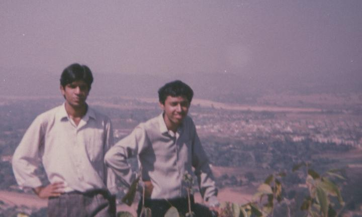
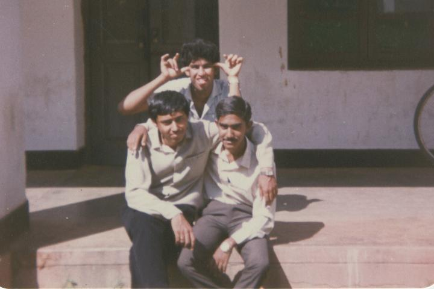
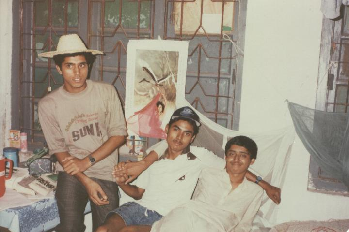
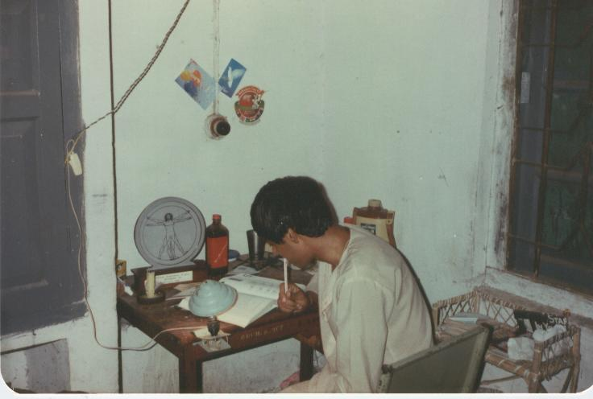
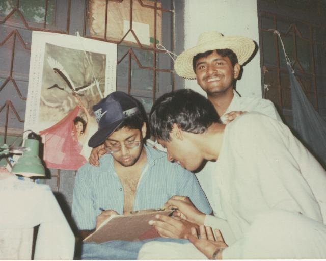

During the first two years at REC Rourkela, I stayed in Hall 1, which had four boys to one large room. The first few weeks involve what is known as ragging — the closest thing I can think of for the American reader is the Marines boot camp. You are treated really badly by the seniors, apparently because they were treated badly themselves. I have never been a supporter of this form of fraternization, although at times I have felt that some idiots — including, perhaps, me — did deserve having some corners rubbed off.




